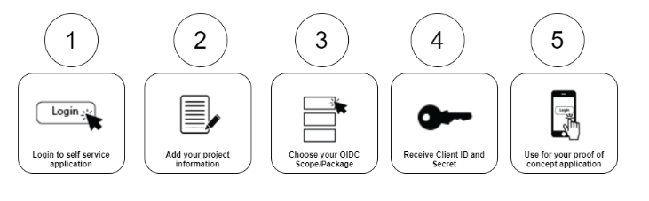
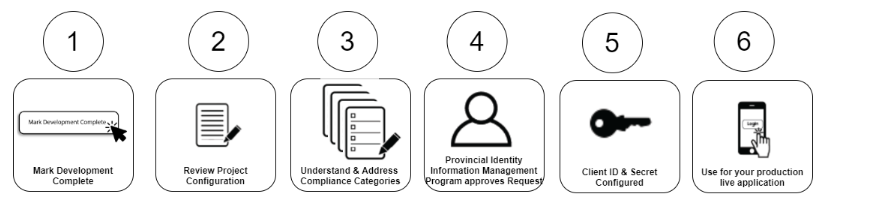
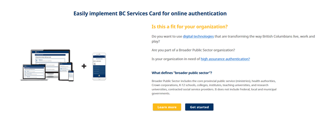

We call the activities in this step a development access request. It is designed to be free from barriers, enabling developers to easily access data within a protected development tier. It allows for a quick implementation of a proof of concept or a working model of the BC Services Card within a BPS application.
The key things to keep in mind in this step:
· Identity Information: The BC Services Card provides a higher level of identity assurance and following authentication, identity information about a person is available. We’ve created a set of pre-defined identity data attributes, or scope packages as we call them, for BPS developers to experiment with. These packages are designed to make it easy to understand how you can integrate with BC Services Card.
· Test Accounts: Test BC Services Card accounts are provided to let developers test their work using test data.
· Client ID and Secret: After submitting a development access request, a developer obtains a data sharing client id and secret as per our protocols of Open ID Connect (OIDC) Application Programming Interface (API). 
Once the proof of concept has been tested and is completed to the BPS’ satisfaction, the BPS team uses the self-service application to start the process of requesting Live Access from the Provincial Identity Information Management (IDIM) Program. To keep things simple, we’re asking each BPS for the contact information of three types of team members:
· A developer, who uses the Client ID and secret details to configure the OpenID Connect configuration for the BPS online service;
· A manager, who will be involved in the end to end Live Access Request Process. This person works with both the development and executive team;
· An executive sponsor, who has the accountability and authority to sign off on privacy documents, security documents and service agreements.
The Live Access Request process is designed to enable BPS teams to work at their own pace to understand and address the various categories of compliance before integrating with a live production-ready environment of BC Services Card data. A member of IDIM Program is always available to help BPS clients in completing the integration components.
The BC Services Card self-service application guides the user through each of the required compliance categories to address integral information required by the IDIM Program. The IDIM Program is mandated[LC1] [SZC2] to provide identity and authentication services using the BC Services Card to support citizen transactions with government services.
Once a user has completed all of the compliance categories, a member of the IDIM Program will provide the BPS team with a data sharing client ID and secret for using the OpenIDConnect (OIDC) API to provide authentication for the live production environment.
If you are ready to experiment and are considering a Live Access request, click get started
